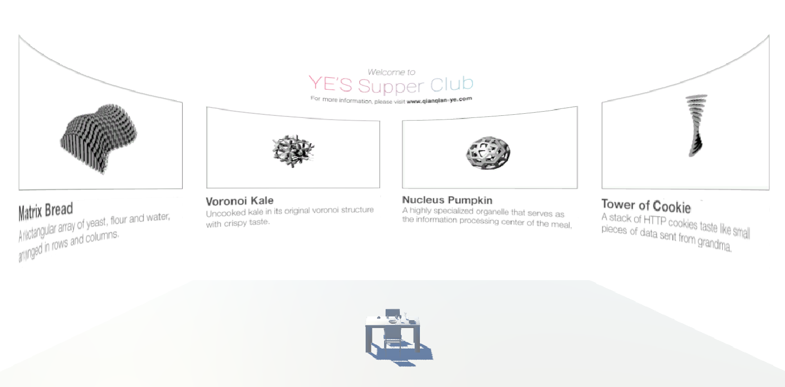
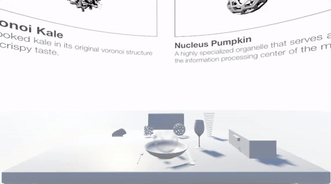
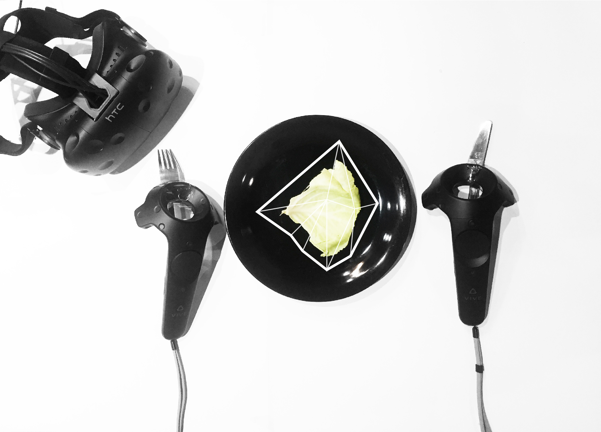
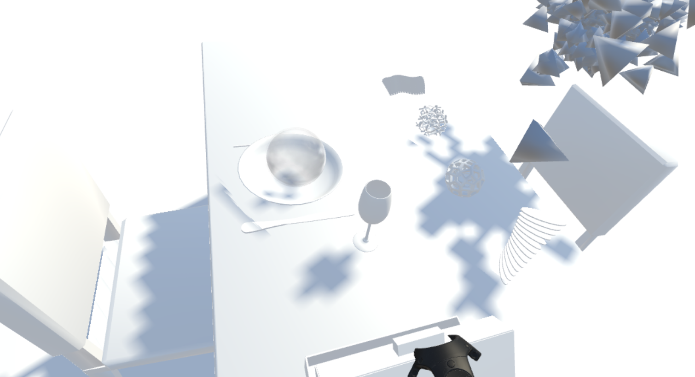
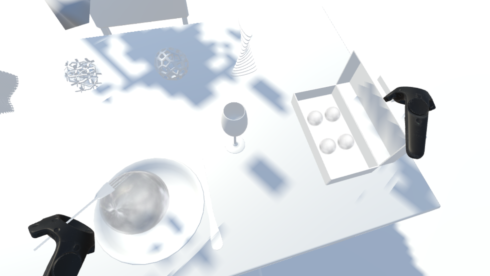
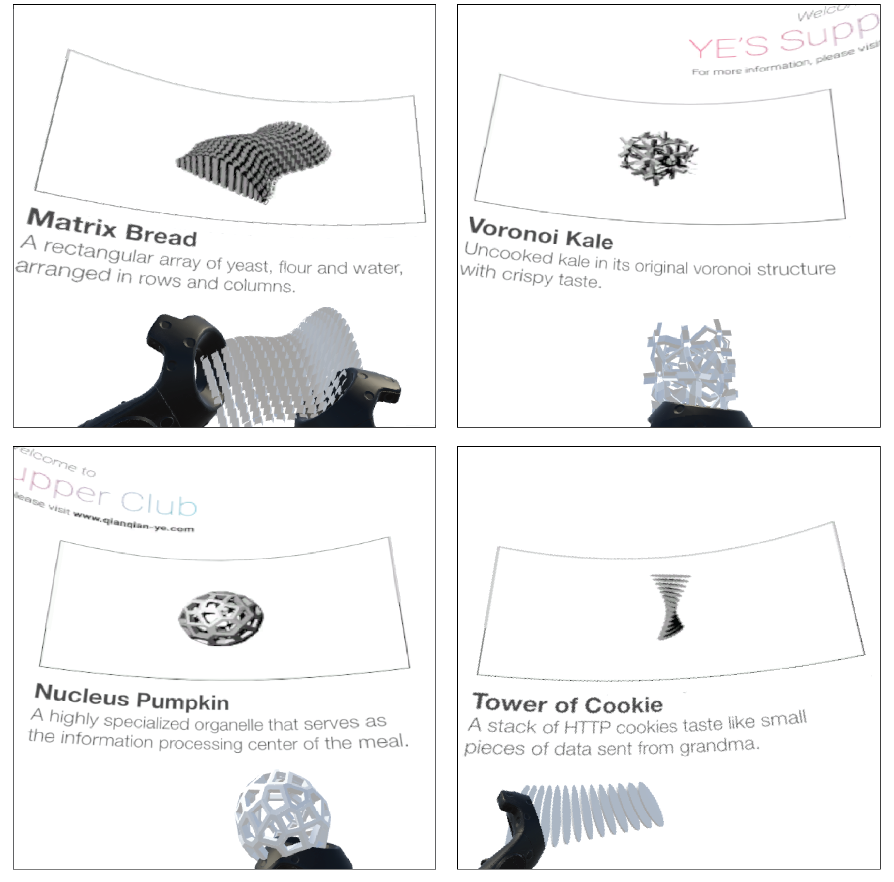
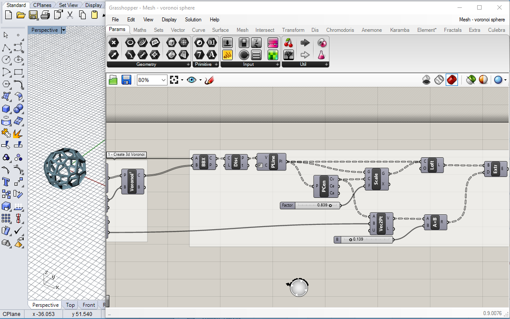

2017
"Can we have 3D printed super food that is sci-fi looking?", I often wonder. "Oh hey! We should get dinner together soon", you might hear this a lot. YE'S Supper Club is a Virtual Reality Dining Experience I designed & developed via Unity3D. This VR experience includes 4 course meal, wine pairing plus a secret box of ice cream. The player will see a dining table with food, utensils and an abstract dinning partner sitting across table. The 4 course meal is explained by the 360 degree menu around the player. Next step: I am trying to add more social interaction activities with dining partners. I started with designing and modeling 4 types of food with Rhino/Grasshopper. Then I designed the user interface by SketchApp and Adobe Illustrator. While in Unity3d, I developed all the physics to allow players to pick up, throw, drop, and use held objects. Come dine with me in VR! Please check the demo at Vimeo. Source code for this project is at my Github.
Time: 01/2017, 3 Days
Tools: Rhino/Grasshopper, Unity3D, C#, SketchApp, Adobe Illustrator, iMovie
Type: Individual work
Virtual Reality
Experience Design
Future of Things
Branding
Overal Setting in Unity3D
Generated Abstract Dining Partner
While in 'Reality'
Dining Table Layout Design
Physics-based interaction on the Vive Controller
Rhino/Grasshopper Generated Food
 